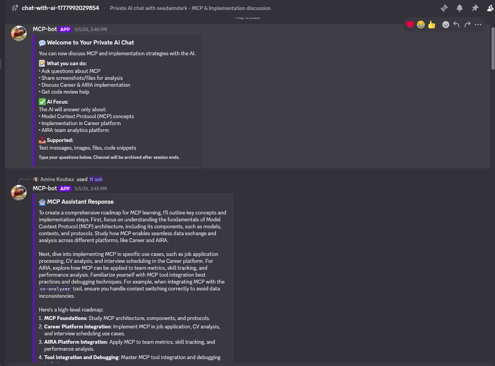
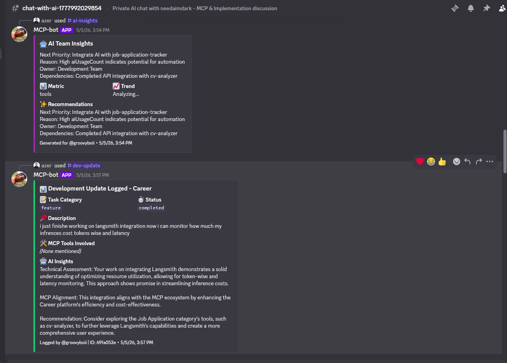
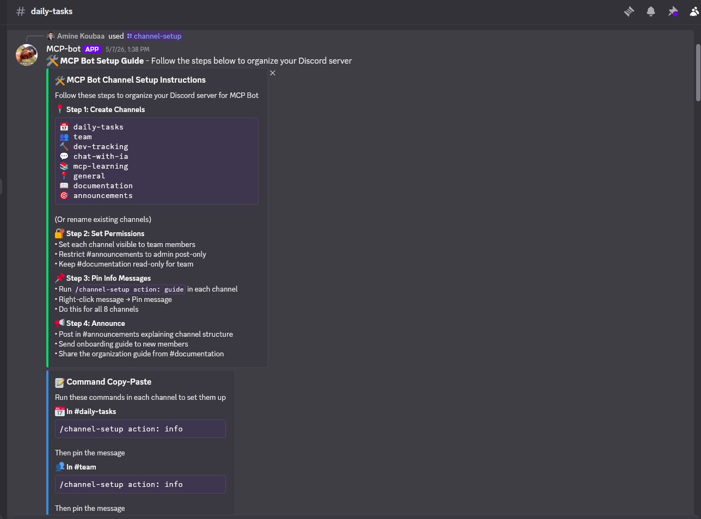
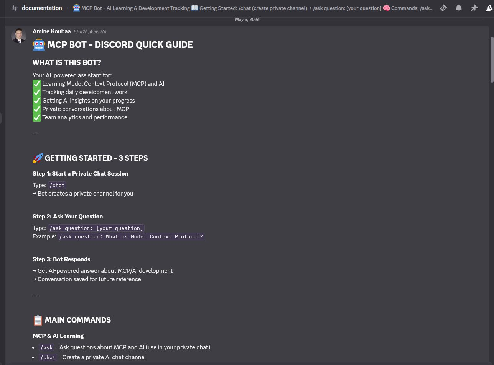

Un coéquipier IA installé dans le serveur Discord d'une équipe de développement. Il enregistre le travail quotidien, le transforme en analyses et en prochaines étapes, et répond aux questions techniques en salon privé, sans que personne ne quitte Discord.
16commandes pour les tâches, le suivi, l'apprentissage et l'aide IA
8salons, chacun avec son rôle et ses commandes
6paliers de séries, de 3 à 100 jours d'affilée
10commandes par membre et par minute, pour un usage équitable
En bref
Discord Bot (appelé MCP Bot dans le serveur) aide une équipe de développement à rester organisée là où elle échange déjà : Discord. Les membres tapent de courtes commandes pour noter ce qu'ils ont fait, demander un résumé de la veille ou un plan pour la journée, et suivre les progrès de l'équipe.
Derrière chaque commande, un modèle d'IA lit le travail enregistré et répond par des résumés, des recommandations et des réponses. Le bot a été conçu pour une équipe qui travaille avec le Model Context Protocol (MCP) : il sert aussi de compagnon d'apprentissage sur MCP, Docker et l'IA.
Pour qui
Développeurs
Notent leurs tâches et avancées en quelques secondes, reçoivent un retour de l'IA et posent leurs questions techniques en privé.
Responsables d'équipe
Consultent les statistiques, l'analyse des progrès et les recommandations de l'IA sur les priorités.
Nouveaux arrivants
Suivent le guide intégré, apprennent MCP pas à pas et reçoivent des astuces quotidiennes.
Administrateurs du serveur
Organisent le serveur en quelques minutes grâce à une installation guidée et des explications épinglées dans chaque salon.
Le problème résolu
Dans une équipe chargée, les avancées du jour se perdent dans les fils de discussion, personne ne voit clairement qui avance ou qui est bloqué, et les nouveaux peinent à trouver des réponses sur une technologie aussi récente que MCP.
Le bot donne un cadre à ce travail : chaque mise à jour est enregistrée de façon structurée, l'IA en tire des résumés et des prochaines étapes, et les questions obtiennent une réponse immédiate au lieu d'attendre un collègue.
Fonctionnalités principales
Discussion privée avec l'IA
/chat crée un salon visible par le seul membre ; /ask y répond aux questions sur MCP, l'IA et les projets de l'équipe.
Résolution de problèmes
/challenge-solver explique la cause probable d'un blocage, les étapes pour le corriger et comment l'éviter.
Suivi du développement
/dev-update enregistre le projet, le type de travail, le statut et les outils utilisés ; l'IA ajoute une évaluation et une recommandation.
Analyses d'équipe
/ai-insights et /team-progress analysent le travail enregistré et proposent des priorités.
Tâches du jour
/task-completed enregistre le travail terminé ; /yesterday-summary et /today-plan donnent un résumé IA et un plan de journée.
Motivation et séries
Les jours actifs consécutifs forment une série, débloquent des paliers avec des points et alimentent le classement.
Apprentissage
/mcp-learn et /daily-tip partagent ressources et astuces sur MCP, Docker et l'IA, selon le niveau.
Salons organisés
/channel-setup publie un guide d'installation et une fiche explicative dans chaque salon ; chaque commande ne fonctionne que dans son salon.
Usage équitable
Chaque membre peut lancer jusqu'à dix commandes par minute, pour que l'IA reste disponible pour tous.
Fonctionnement
Un membre tape une commande
Discord transmet la commande au service web du bot, qui vérifie qu'elle provient bien de Discord.
Le bot vérifie le contexte
Il s'assure que la commande est autorisée dans ce salon et que le membre n'a pas dépassé la limite d'usage.
Le travail est enregistré
Tâches, mises à jour, séries et discussions sont sauvegardées en base, ce qui construit l'historique de l'équipe.
L'IA répond
Le bot envoie au modèle d'IA une consigne prête à l'emploi avec les données utiles, et reçoit un résumé, une réponse ou une recommandation.
La réponse s'affiche dans Discord
Elle est publiée sous forme de carte claire, dans le salon ou en privé selon la commande.
Technologies
Service du bot
Node.jsFait tourner le bot.
ExpressReçoit les commandes que Discord envoie à l'adresse web du bot.
API Interactions de DiscordTransmet les commandes, vérifie leur signature et permet au bot de créer des salons et de publier des messages.
IA
Groq avec LLaMA 3.3 70BRédige résumés, réponses, analyses et recommandations.
Bibliothèque de consignesUn ensemble d'instructions partagé, chargé une seule fois, pour des réponses cohérentes et moins de jetons consommés.
Rotation des clés et cacheBascule sur une autre clé IA quand l'une atteint sa limite et réutilise les réponses récentes.
Données et hébergement
MongoDB AtlasStocke tâches, mises à jour, séries, récompenses, ressources d'apprentissage et discussions.
RenderHéberge le service web du bot dans le cloud.
Aperçu

Une discussion privée où l'IA répond à une question sur MCP

Analyses d'équipe et mise à jour de développement évaluée par l'IA

Installation guidée des salons du serveur

Le guide de démarrage intégré
Ce qu'il apporte
Des progrès visibles
Chacun voit ce que l'équipe a accompli, qui est sur une série et où un coup de main est utile.
Des réponses plus rapides
Les questions techniques obtiennent une réponse utile en quelques secondes, en privé, sans interrompre un collègue.
Moins de suivi manuel
Résumés et plans de journée sont rédigés par l'IA à partir des mises à jour de l'équipe.
Aucun nouvel outil
Tout se passe dans Discord, là où l'équipe travaille déjà ensemble.